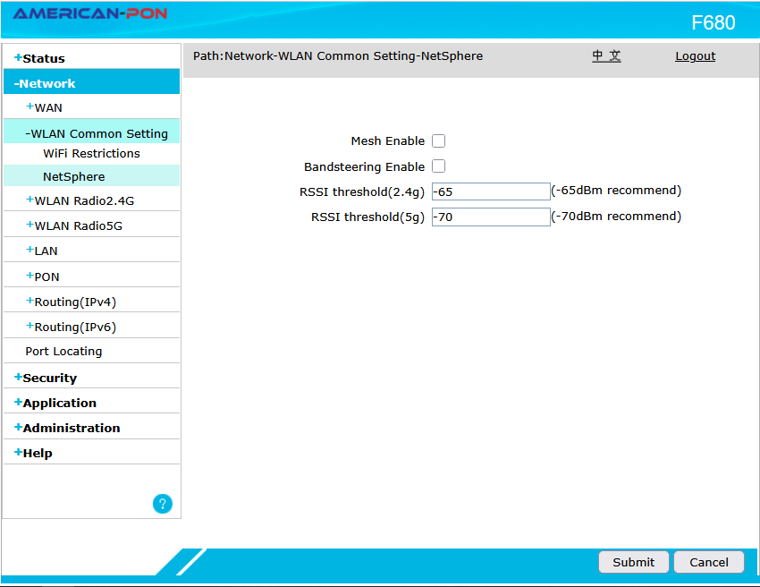

Pasos para la configuracion de Filtrado Mac en ONU Router F680
Jesus Arellano
En la presente entrada de blog aprenderas el paso a paso de como configurar el filtrado mac en el router F680 de la marca American-PON
01 Ingresar a la configuracion del Router
Ingresa en el navegador web de tu preferencia como Google Chrome, Mozilla Firefox, Opera, etc. y en la barra de direcciones o URL escribe la siguiente dirección IP: 192.168.1.1 y presiona el botón de Enter.
El usuario predeterminado es admin asi como la clave, de igual manera escribes admin
02 Separacion de las Bandas inalambricas
Seleccionas Network, WLAN Common Setting, NetSphere, asi como aqui aparece, destildas la opcion de Bandsteering Enable, los campos de RSSI thereshold(2.4g) y RSSI thereshold(5g) agragas los valores predeterminados Una vez separadas las bandas seleccionas Submit
03 Filtrado MAC
Dentro de la misma opcion de WLAN, hay dos opciones a tener en cuenta WLAN Radio 2.4G y WLAN Radio 5G, Cada una de estas tiene por separado la opcion de Access Control List
En Access Control List puedo deshabilitar el filtrado, Permitir o Denegar el acceso a internet a los dispositivos cuyas direcciones mac agregues al listado
Es muy importante tener en cuenta que debes configurar el filtrado mac por separado en cada unas de las senales wifi, la banda 2.4 Ghz se representa en el campo Choose SSID con el nombre de SSID1, mientras que la banda de 5 Ghz se identifica con el nombre SSID5, teniendo en cuenta ademas que los host como telefonos, televisores y laptops tiene varias direcciones mac segun su interface de red, la direccion mac del telefono "X" conectado a la señal 2.4 Ghz es diferente cuando te conectas en la bada de 5 Ghz